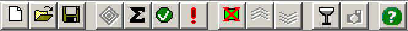

Toolbars
OpenHoldem Main Toolbar

From left to right, the buttons on the Main toolbar are:
- New formula file
- Open formula file
- Save formula file
- Engage (or stop) the Autoplayer (nested diamonds)
- Edit current formula
- Enable validator
-
Tag log-file. This will create an entry in the log that makes it easy to find and review critical situations.If the autoplayer already acted this log-message will appear slightly after the interesting decision.
[*** ATTENTION ***] User tagged this situation for review
- Show/hide table display
- Attach OpenHoldem window to the top of the table.
- Attach OpenHoldem window to the bottom of the table.
- Show scraper output
- Shoot a replay-frame
- Show the help-file (this file!)
OpenHoldem Flags Toolbar

The Flags toolbar is used to set internal OpenHoldem flag symbols f0..f19 to on or off. These flags can be used in your formula set to quickly enanble or disable certain functionality. E.g. you could use flag 0 to to tell your bot to use a different starting-hands-chart or to do more conti-betting.
##f$preflop## WHEN f0 RETURN f$PokerTragedySHCAction FORCE WHEN Others RETURN f$SklanskySHCAction FORCE